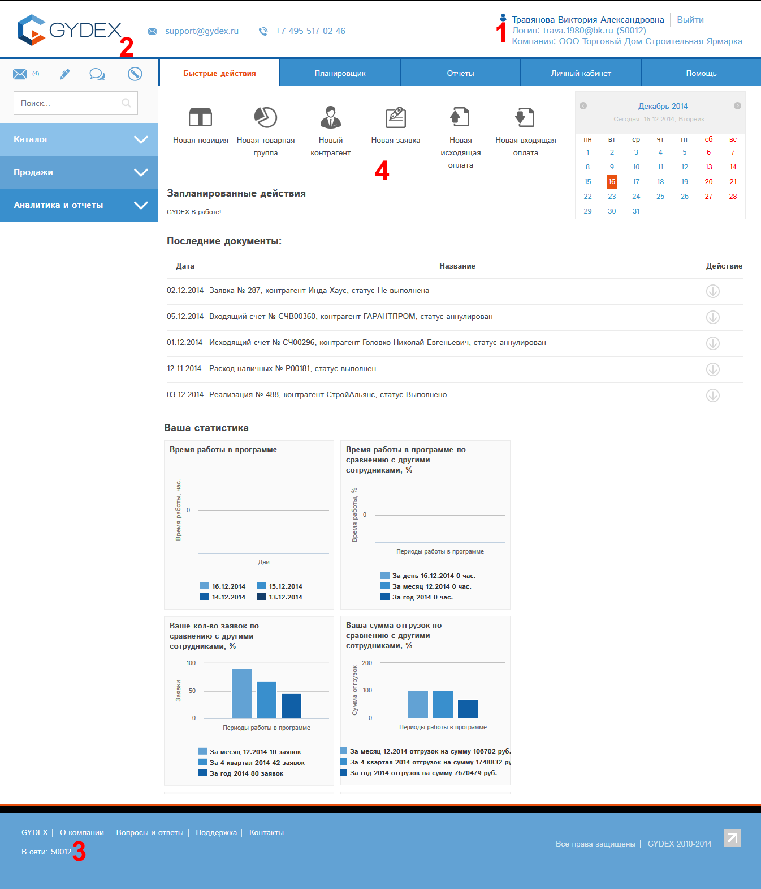
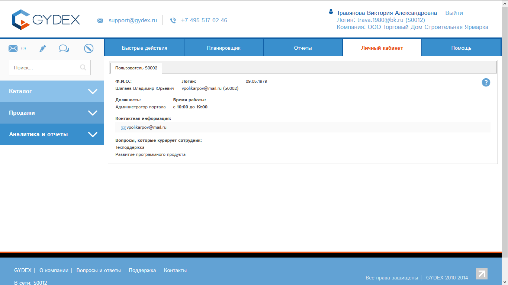

Вход в программу «Мобильный офис» осуществляется
по адресу www.gydex.ru.
Необходимо ввести выданные Вам логин и пароль и нажать кнопку «Войти»:
Рис.1
Кликните по ссылке «Войти» в верхней части страницы:
Рис. 2
Откроется окно для ввода логина и пароля:
Рис.3.
Необходимо ввести выданные Вам логин и пароль и нажать кнопку «Войти».
После ввода логина и пароля нажмите кнопку «ВОЙТИ».
Если Вы не помните Ваш пароль в программе, то Вы можете сменить его. Для этого кликните по ссылке «Я забыл пароль» и следуйте инструкциям программы.
Если Вы правильно ввели данные, то откроется стартовая страница программы GYDEX. Мобильный офис.

Рис.4
Интерфейс программы состоит из нескольких основных элементов, обозначенных на Рис. 4 цифрами:
1: Указан логин, под которым Вы работаете, Ваши фамилия, имя, отчество, организация.
2. Основное меню системы. В зависимости от Ваших прав, состав меню может отличаться. На Рис. 4 приведен наиболее полный вариант меню.
3. Блок «В сети» - список логинов работающих в кабинете в данный момент сотрудников. При наведении мыши на каждый логин будет выведена подробная информация о сотруднике. Для оперативного решения Вашего вопроса, обратите внимание на раздел «Вопросы, которые курирует сотрудник», - правильно адресованный запрос нужному сотруднику позволит значительно ускорить его обработку, и, как следствие, решение проблемы. По логину можно кликнуть, и откроется карта этого сотрудника (Рис. 5)
4. Кнопки быстрого доступа. В зависимости от Ваших прав, у Вас могут быть показаны разные кнопки. Данные кнопки позволяют быстро перейти к определенным операциям.

Рис.5 Карта сотрудника.